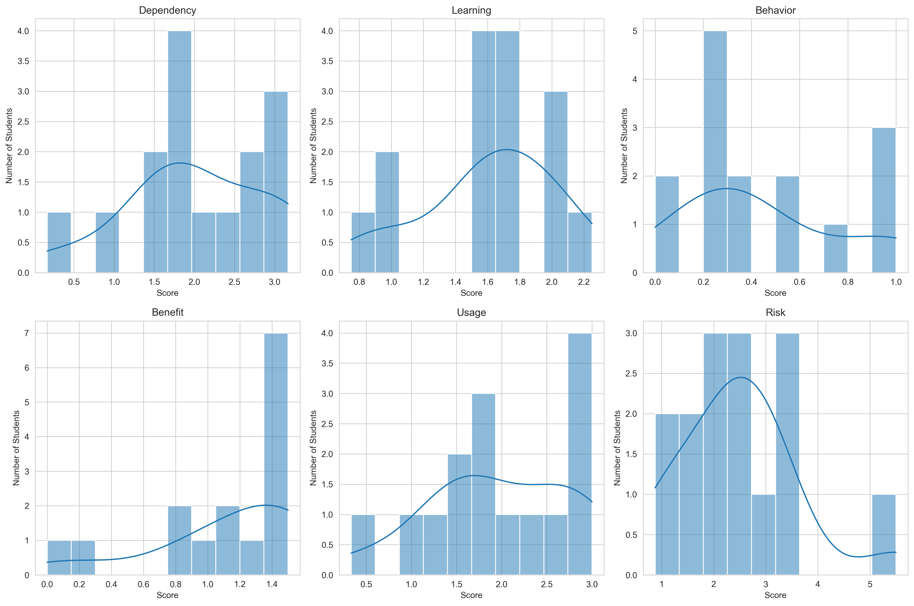
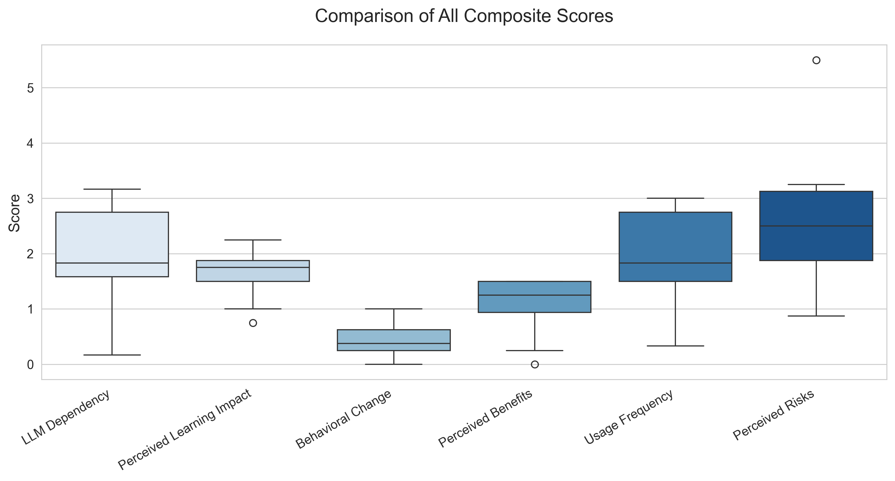
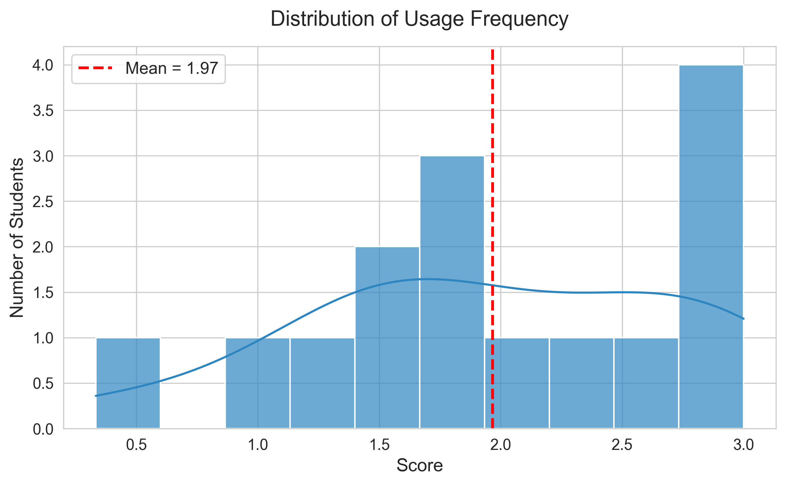
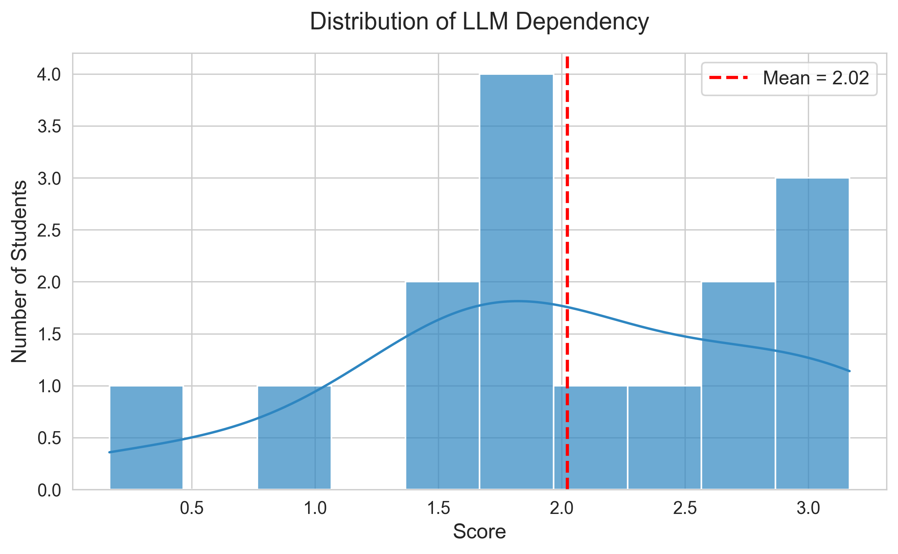
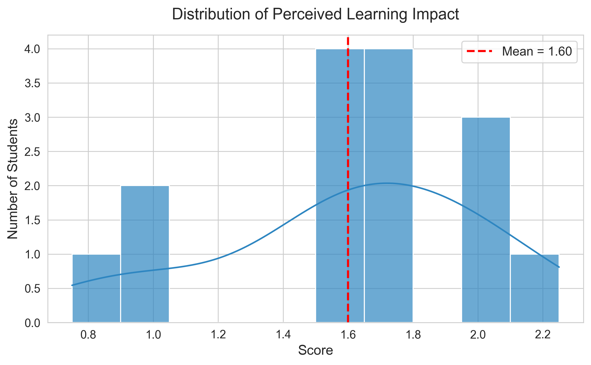
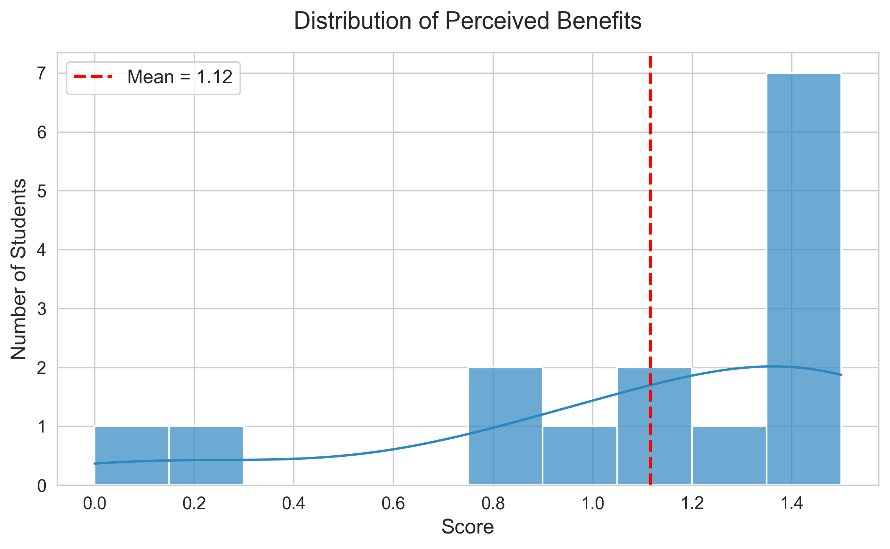
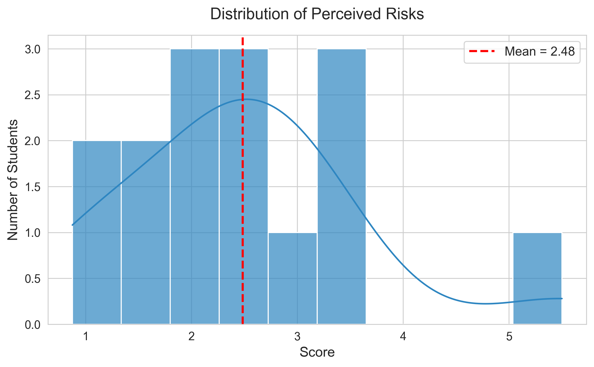
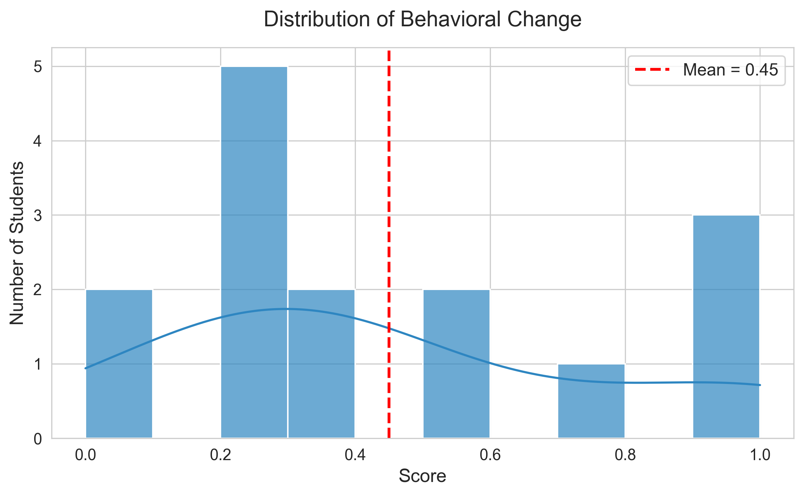

Results & Analysis
Capstone Project 2025–2026 | Lewis University
← Back to Home
Composite Scores Overview
Histograms of Composite Scores (Dependency, Learning, Behavior, Benefit, Usage, Risk)


Key Findings:
- High Usage: Students heavily use LLMs (Usage_Student mean ~ 2.1 / 3.0)
- Moderate Learning Gains: Learning_Student mean ~ 1.7 / 3.25
- Perceived Benefits: Relatively high (Benefit_Student mean ~ 1.25 / 1.75)
- Risk Level: Moderately high (Risk_Student mean ~ 2.5 / 3.0)
- Problematic behavior: Remains relatively low on average (Behavior_Student mean ~ 0.45 / 1.0)
Individual Score Distributions






Survey Analysis Results: Students vs Alumni
All composite scores in this section are normalized to a 0–1 scale for fair comparison between current undergraduate students and alumni/graduates.
1. Student LLM Impact Profile

Student Composite Scores (Normalized 0–1 Scale)
This radar chart displays the average scores across six key dimensions for current undergraduate Computer Science students at Lewis University.
Key Results: Students show relatively high Usage and Dependency on LLMs, with moderate Benefit. However, Learning Impact is notably lower, suggesting that frequent LLM use is not strongly improving conceptual understanding, problem-solving, retention, or critical thinking. Behavior/Risk remains low-to-moderate.
2. Alumni LLM Impact Profile

Alumni Composite Scores (Normalized 0–1 Scale)
This radar chart shows the average scores across the same six dimensions for Computer Science alumni/graduates from Lewis University, reflecting retrospectively on their experiences with LLMs.
Key Results: Alumni report lower Dependency and Usage than current students. Learning Impact remains weak (similar to students), and Benefit is moderate. Risk/Behavior levels are comparable between groups. This suggests that heavy LLM reliance during studies may continue with limited long-term gains in deep learning skills.
3. LLM Impact Comparison: Students vs Alumni

Comparison of LLM Impact: Students vs Alumni (Normalized 0–1)
This grouped bar chart compares the normalized average scores between current undergraduate students and alumni across the six dimensions.
Key Results: Current students score higher on Usage and Dependency, as expected while actively completing coursework. Both groups show similarly modest Benefit and low Learning Impact, revealing a consistent gap between how often LLMs are used and actual improvements in deep learning skills.